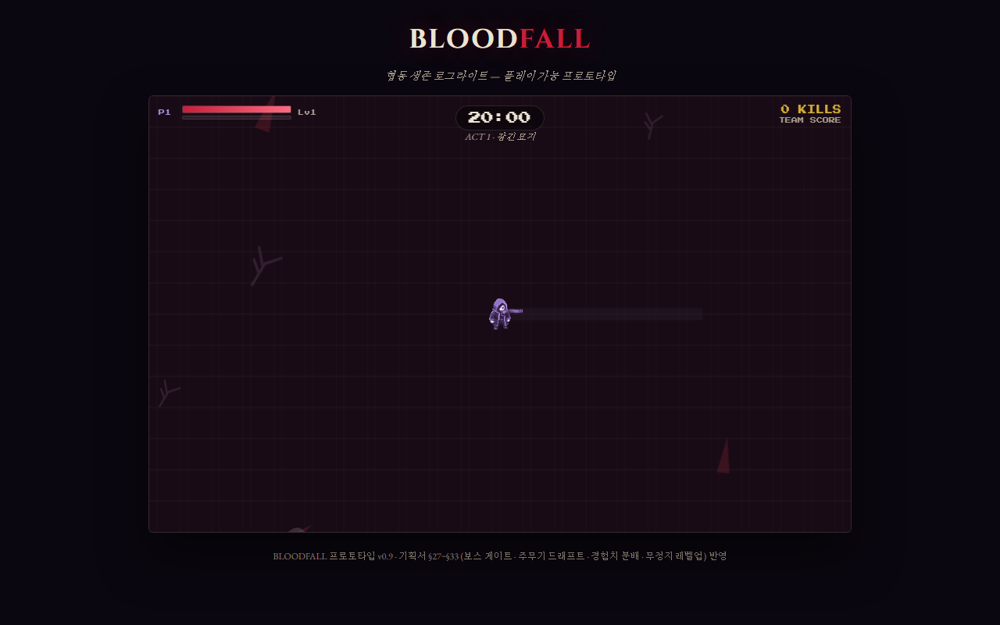
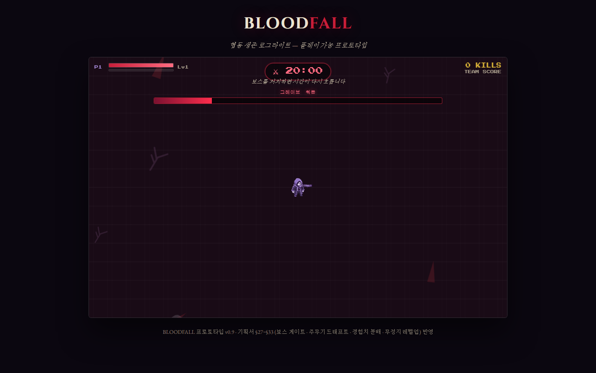
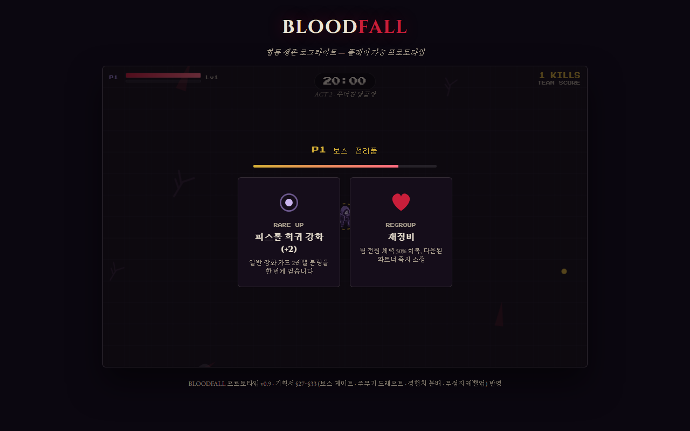
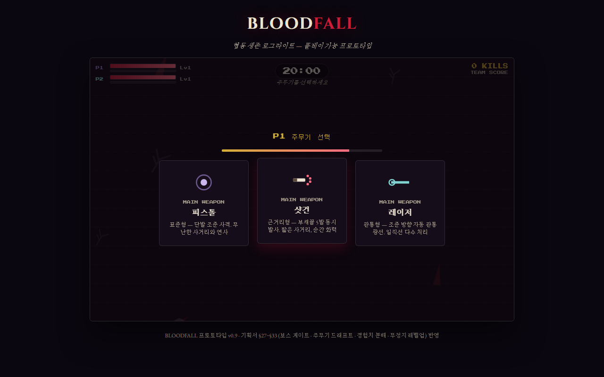

BLOODFALL (뱀서라이크 협동 프로토타입 v0.9) 자동 테스트 결과
실행: 2026-11-02 19:03 · 도구: Playwright(Chromium) · 대상: 뱀서라이크/bloodfall_playable.html · 리포트 생성: 2026-11-02
201 / 211자동화한 TC / 전체 TC
194테스트 수 (TC 여러 개를 묶은 것 포함)
190통과
4실패
353초전체 실행 시간
TC 출처: 기존 TC 없음 — 뱀서라이크/게임기획서_뱀서라이크_멀티.md v0.9를 근거로 Claude Code가 작성한 TC 초안
실패 상세
[BF-04] 주무기 드래프트 10초 미선택 시 피스톨 자동 배정
Error: 기획서 §31.1: 미선택 시 피스톨(표준형) 자동 배정 expect(received).toBe(expected) // Object.is equality Expected: "bullet" Received: "laser"

[BF-1118] 페이즈·패턴 — 그레이브 워든 광폭화 속도
Error: expect(received).toBeCloseTo(expected, precision) Expected: 1.3 Received: 1.3499999999998475 Expected precision: 2 Expected difference: < 0.005 Received difference: 0.0499999999998475

[BF-1402] 보스 전리품 — 무기 1개일 때 카드 수
Error: expect(locator).toHaveCount(expected) failed
Locator: locator('#choiceCards .card')
Expected: 3
Received: 2
Timeout: 2000ms
Call log:
[BF-1714] 연결 문구 — 게임 중 연결 끊김 안내
Error: expect(locator).toBeVisible() failed
Locator: getByText('상대방과의 연결이 끊어졌습니다.')
Expected: visible
Received: hidden
Timeout: 2000ms
Call log:
자동화한 TC (201건)
검토 칸: review 칸은 LKM이 '확인함' 또는 '버림'으로 바꾼다. AI가 쓴 TC는 처음에 모두 '초안'.
| TC | 내용 | 근거 | 결과 | 시간 | 검토 |
|---|---|---|---|---|---|
| BF-01 | 모드 선택 메뉴에 1인·2인 협동·온라인 버튼 노출 | §8 | 통과 | 1.4초 | 초안 |
| BF-02 | 게임 시작 시 주무기 카드 3장(피스톨·샷건·레이저) 제시, 선택 전 타이머 정지 | §31.1 | 통과 | 3.6초 | 초안 |
| BF-03 | 주무기 카드 선택 시 그 무기 1개만 장착되고 게임 시작 | §30.1 §31.1 | 통과 | 1.8초 | 초안 |
| BF-04 | 주무기 드래프트 10초 미선택 시 피스톨 자동 배정 | §31.1 | 실패 | 13.1초 | 초안 |
| BF-05 | WASD 이동, 맵 경계 밖으로 나가지 않음 | §4.1 §25 | 통과 | 3.6초 | 초안 |
| BF-06 | 마우스 좌클릭을 누르는 동안만 주무기 발사 | §23 | 통과 | 2.7초 | 초안 |
| BF-07 | 조준 사격으로 몬스터 처치 시 처치 수·HUD 증가, 경험치 오브 드랍 | §3 §8 | 통과 | 2.7초 | 초안 |
| BF-08 | 경험치가 다 차면 레벨업, 다음 필요 경험치 = 20×1.2^(레벨-1), LEVEL UP 카드 3장 | §32.3 §33.2 | 통과 | 1.7초 | 초안 |
| BF-09 | 연속 레벨업은 대기열로 이어지고 매번 10초가 새로 적용 | §33.1-5 | 통과 | 4.0초 | 초안 |
| BF-10 | 카드 선택 중 무적 (몬스터가 붙어도 체력 유지) | §33.1-2 | 통과 | 3.3초 | 초안 |
| BF-11 | 카드 선택 중 이동 불가 | §33.1-2 | 통과 | 3.3초 | 초안 |
| BF-12 | 카드 선택 중 보조무기 자동 발동 정지 | §33.1-6 | 통과 | 3.3초 | 초안 |
| BF-13 | 카드 선택 중에도 게임 진행 시간은 계속 흐름 (무정지) | §33.1-1 | 통과 | 3.3초 | 초안 |
| BF-14 | 레벨업 카드 10초 미선택 시 무작위 1장 자동 적용 후 복귀 | §33.1-3 | 통과 | 12.2초 | 초안 |
| BF-15 | 레벨업 카드에 장착하지 않은 주무기(샷건·레이저)는 등장하지 않음 | §30.1 | 통과 | 1.5초 | 초안 |
| BF-16 | 2인 협동 경험치 분배: 주운 사람 100%, 파트너 70% | §32.1 | 통과 | 1.6초 | 초안 |
| BF-17 | 로컬 협동 동시 레벨업 시 한 명씩, 대기자의 10초는 흐르지 않음 | §33.2 | 통과 | 3.8초 | 초안 |
| BF-18 | 05:00에 Act 1 보스 등장, 진행 타이머 정지·HUD ⚔ 표시·보스 체력바 | §27.1 §27.2 | 통과 | 6.3초 | 초안 |
| BF-19 | 보스 처치 시 전리품 카드 3장(서로 다른 희귀 강화 2 + 재정비 1), Act 2 전환 | §31.2 §27.2 | 통과 | 6.3초 | 초안 |
| BF-20 | 전리품을 고르기 전까지 타이머 정지 유지, 고른 뒤 재개 | §31.2 | 통과 | 6.3초 | 초안 |
| BF-21 | 아이템 박스 포션: 최대 체력 10% 회복, 최대치 초과 안 함 | §16.2 | 통과 | 1.4초 | 초안 |
| BF-22 | 아이템 박스 폭탄: 가까운 몬스터 10마리 처치, 보스 제외 | §16.2 | 통과 | 1.1초 | 초안 |
| BF-23 | 아이템 박스 자석: 3초간 먼 경험치 오브도 흡수 | §16.2 | 통과 | 3.5초 | 초안 |
| BF-24 | 1인 체력 0 → 전멸 결과 창(FAIL) | §3 | 통과 | 1.1초 | 초안 |
| BF-25 | 최종 보스(나이트폴 공작) 처치 시 클리어 결과 창(CLEAR) | §20 §27.2 | 통과 | 1.1초 | 초안 |
| BF-26 | [다시 도전] 시 같은 모드로 주무기 선택부터 새 게임 | §8 | 통과 | 1.1초 | 초안 |
| BF-27 | [모드 선택으로] 시 메뉴 복귀 | §8 | 통과 | 1.1초 | 초안 |
| BF-28 | 2인 협동: 다운된 파트너 곁에 2.6초 머무르면 체력 50%로 소생 | §2 §3 | 통과 | 4.2초 | 초안 |
| BF-29 | 온라인 참가: 4자리가 아닌 방 코드 입력 시 안내 문구 | §18 | 통과 | 0.9초 | 초안 |
| BF-30 | 몬스터 스폰·사격이 이어지는 20초 플레이 동안 콘솔 오류 없음 | - | 통과 | 21.1초 | 초안 |
| BF-101 | 모드 선택 — [1인 플레이] 문구 | 모드 선택 메뉴·참가 입력 (§8 §18) | 통과 | 0.8초 | 초안 |
| BF-102 | 모드 선택 — [2인 협동] 문구 | 모드 선택 메뉴·참가 입력 (§8 §18) | 통과 | 0.7초 | 초안 |
| BF-103 | 모드 선택 — 참가 입력칸 숨김 | 모드 선택 메뉴·참가 입력 (§8 §18) | 통과 | 0.7초 | 초안 |
| BF-104 | 모드 선택 — [온라인 참가하기] 열기 | 모드 선택 메뉴·참가 입력 (§8 §18) | 통과 | 0.8초 | 초안 |
| BF-105 | 모드 선택 — [온라인 참가하기] 다시 닫기 | 모드 선택 메뉴·참가 입력 (§8 §18) | 통과 | 0.9초 | 초안 |
| BF-106 | 모드 선택 — 입력칸 안내 글자 | 모드 선택 메뉴·참가 입력 (§8 §18) | 통과 | 0.8초 | 초안 |
| BF-107 | 모드 선택 — 5자리 입력 막힘 | 모드 선택 메뉴·참가 입력 (§8 §18) | 통과 | 0.9초 | 초안 |
| BF-108 | 모드 선택 — 3자리 코드 | 모드 선택 메뉴·참가 입력 (§8 §18) | 통과 | 0.9초 | 초안 |
| BF-109 | 모드 선택 — 공백 섞인 코드 | 모드 선택 메뉴·참가 입력 (§8 §18) | 통과 | 0.9초 | 초안 |
| BF-201 | 주무기 드래프트 — 피스톨 카드 설명 | 주무기 드래프트 (§31.1) | 통과 | 0.8초 | 초안 |
| BF-202 | 주무기 드래프트 — 샷건 카드 설명 | 주무기 드래프트 (§31.1) | 통과 | 0.8초 | 초안 |
| BF-203 | 주무기 드래프트 — 레이저 카드 설명 | 주무기 드래프트 (§31.1) | 통과 | 0.8초 | 초안 |
| BF-204 | 주무기 드래프트 — 카드 등급 표시 | 주무기 드래프트 (§31.1) | 통과 | 0.8초 | 초안 |
| BF-205 | 주무기 드래프트 — 남은 시간 게이지 시작 | 주무기 드래프트 (§31.1) | 통과 | 0.9초 | 초안 |
| BF-206 | 주무기 드래프트 — 남은 시간 게이지 줄어듦 | 주무기 드래프트 (§31.1) | 통과 | 5.8초 | 초안 |
| BF-207 | 주무기 드래프트 — 피스톨 장착 | 주무기 드래프트 (§31.1) | 통과 | 0.9초 | 초안 |
| BF-208 | 주무기 드래프트 — 레이저 장착 | 주무기 드래프트 (§31.1) | 통과 | 0.8초 | 초안 |
| BF-209 | 주무기 드래프트 — 2인 협동 P2 드래프트 | 주무기 드래프트 (§31.1) | 통과 | 0.8초 | 초안 |
| BF-210 | 주무기 드래프트 — 같은 주무기 중복 허용 | 주무기 드래프트 (§31.1) | 통과 | 0.9초 | 초안 |
| BF-301 | 상단 정보 — 시작 시간 | HUD (§8 §24 §27.1) | 통과 | 0.9초 | 초안 |
| BF-302 | 상단 정보 — 시간 올림 표시 | HUD (§8 §24 §27.1) | 통과 | 1.0초 | 초안 |
| BF-303 | 상단 정보 — 시간 1분 지남 | HUD (§8 §24 §27.1) | 통과 | 0.9초 | 초안 |
| BF-304 | 상단 정보 — 처치 수 시작 | HUD (§8 §24 §27.1) | 통과 | 0.9초 | 초안 |
| BF-305 | 상단 정보 — 레벨 시작 | HUD (§8 §24 §27.1) | 통과 | 0.9초 | 초안 |
| BF-306 | 상단 정보 — 경험치 바 절반 | HUD (§8 §24 §27.1) | 통과 | 0.9초 | 초안 |
| BF-307 | 상단 정보 — 체력 바 줄어듦 | HUD (§8 §24 §27.1) | 통과 | 0.9초 | 초안 |
| BF-308 | 상단 정보 — 1인 P2 줄 숨김 | HUD (§8 §24 §27.1) | 통과 | 0.9초 | 초안 |
| BF-309 | 상단 정보 — 2인 P2 줄 표시 | HUD (§8 §24 §27.1) | 통과 | 1.2초 | 초안 |
| BF-310 | 상단 정보 — ACT 1 이름 | HUD (§8 §24 §27.1) | 통과 | 0.9초 | 초안 |
| BF-311 | 상단 정보 — ACT 2 이름 | HUD (§8 §24 §27.1) | 통과 | 0.9초 | 초안 |
| BF-312 | 상단 정보 — ACT 3 이름 | HUD (§8 §24 §27.1) | 통과 | 0.9초 | 초안 |
| BF-313 | 상단 정보 — ACT 4 이름 | HUD (§8 §24 §27.1) | 통과 | 0.9초 | 초안 |
| BF-314 | 상단 정보 — 보스 없음 — 보스 체력바 숨김 | HUD (§8 §24 §27.1) | 통과 | 0.9초 | 초안 |
| BF-401 | 이동·공격 — P2 방향키 이동 | 조작 (§14 §23) | 통과 | 1.5초 | 초안 |
| BF-402 | 이동·공격 — P2 Enter 공격 | 조작 (§14 §23) | 통과 | 1.6초 | 초안 |
| BF-403 | 이동·공격 — P1 공격은 마우스만 | 조작 (§14 §23) | 통과 | 1.4초 | 초안 |
| BF-404 | 이동·공격 — 마우스 떼면 발사 멈춤 | 조작 (§14 §23) | 통과 | 1.9초 | 초안 |
| BF-405 | 이동·공격 — 대각선 이동 | 조작 (§14 §23) | 통과 | 1.5초 | 초안 |
| BF-501 | 레벨업 카드 — 강화 카드 제목 형식 | 레벨업 카드 풀·최대 레벨·진화 (§21 §22.3 §30) | 통과 | 0.9초 | 초안 |
| BF-502 | 레벨업 카드 — 패시브 카드 제목 형식 | 레벨업 카드 풀·최대 레벨·진화 (§21 §22.3 §30) | 통과 | 0.9초 | 초안 |
| BF-503 | 레벨업 카드 — 새 보조무기 카드 | 레벨업 카드 풀·최대 레벨·진화 (§21 §22.3 §30) | 통과 | 0.9초 | 초안 |
| BF-504 | 레벨업 카드 — 패시브 5/5면 제외 | 레벨업 카드 풀·최대 레벨·진화 (§21 §22.3 §30) | 통과 | 0.9초 | 초안 |
| BF-505 | 레벨업 카드 — 패시브 4/5면 등장 | 레벨업 카드 풀·최대 레벨·진화 (§21 §22.3 §30) | 통과 | 0.9초 | 초안 |
| BF-506 | 레벨업 카드 — 무기 5레벨이면 강화 제외 | 레벨업 카드 풀·최대 레벨·진화 (§21 §22.3 §30) | 통과 | 0.9초 | 초안 |
| BF-507 | 레벨업 카드 — 진화 카드 등장 | 레벨업 카드 풀·최대 레벨·진화 (§21 §22.3 §30) | 통과 | 0.9초 | 초안 |
| BF-508 | 레벨업 카드 — 진화 패시브 없으면 진화 없음 | 레벨업 카드 풀·최대 레벨·진화 (§21 §22.3 §30) | 통과 | 0.9초 | 초안 |
| BF-509 | 레벨업 카드 — 진화 뒤 다시 안 나옴 | 레벨업 카드 풀·최대 레벨·진화 (§21 §22.3 §30) | 통과 | 1.0초 | 초안 |
| BF-510 | 레벨업 카드 — 진화 카드 금색 표시 | 레벨업 카드 풀·최대 레벨·진화 (§21 §22.3 §30) | 통과 | 1.0초 | 초안 |
| BF-511 | 레벨업 카드 — 카드 풀이 비면 응급 처치 | 레벨업 카드 풀·최대 레벨·진화 (§21 §22.3 §30) | 통과 | 1.0초 | 초안 |
| BF-512 | 레벨업 카드 — 협동의 맹세 — 2인 | 레벨업 카드 풀·최대 레벨·진화 (§21 §22.3 §30) | 통과 | 1.0초 | 초안 |
| BF-513 | 레벨업 카드 — 협동의 맹세 — 1인 | 레벨업 카드 풀·최대 레벨·진화 (§21 §22.3 §30) | 통과 | 0.9초 | 초안 |
| BF-514 | 레벨업 카드 — 레벨업 카드 3장 | 레벨업 카드 풀·최대 레벨·진화 (§21 §22.3 §30) | 통과 | 1.0초 | 초안 |
| BF-515 | 레벨업 카드 — 다른 주무기 진화 안 나옴 | 레벨업 카드 풀·최대 레벨·진화 (§21 §22.3 §30) | 통과 | 1.0초 | 초안 |
| BF-516 | 레벨업 카드 — 진화 효과 — 관통탄 피해 | 레벨업 카드 풀·최대 레벨·진화 (§21 §22.3 §30) | 통과 | 1.6초 | 초안 |
| BF-517 | 레벨업 카드 — 보조무기 획득 | 레벨업 카드 풀·최대 레벨·진화 (§21 §22.3 §30) | 통과 | 1.3초 | 초안 |
| BF-518 | 레벨업 카드 — 강화 카드 적용 | 레벨업 카드 풀·최대 레벨·진화 (§21 §22.3 §30) | 통과 | 1.0초 | 초안 |
| BF-601 | 패시브 — 질풍의 가호 | 패시브 효과 값 (§5.3 §22.2) | 통과 | 1.0초 | 초안 |
| BF-602 | 패시브 — 불사의 심장 | 패시브 효과 값 (§5.3 §22.2) | 통과 | 1.2초 | 초안 |
| BF-603 | 패시브 — 광기의 손놀림 | 패시브 효과 값 (§5.3 §22.2) | 통과 | 1.3초 | 초안 |
| BF-604 | 패시브 — 탐욕의 시야 | 패시브 효과 값 (§5.3 §22.2) | 통과 | 1.1초 | 초안 |
| BF-605 | 패시브 — 방탄조끼 | 패시브 효과 값 (§5.3 §22.2) | 통과 | 1.1초 | 초안 |
| BF-606 | 패시브 — 강화장갑 | 패시브 효과 값 (§5.3 §22.2) | 통과 | 1.2초 | 초안 |
| BF-607 | 패시브 — 불사의 심장 즉시 회복 | 패시브 효과 값 (§5.3 §22.2) | 통과 | 1.1초 | 초안 |
| BF-608 | 패시브 — 방탄조끼 실제 피해 | 패시브 효과 값 (§5.3 §22.2) | 통과 | 1.2초 | 초안 |
| BF-701 | 경험치 — Lv3 필요 경험치 | 경험치 곡선·분배 (§32 §33) | 통과 | 1.1초 | 초안 |
| BF-702 | 경험치 — Lv4 필요 경험치 | 경험치 곡선·분배 (§32 §33) | 통과 | 1.1초 | 초안 |
| BF-703 | 경험치 — Lv5 필요 경험치 | 경험치 곡선·분배 (§32 §33) | 통과 | 1.3초 | 초안 |
| BF-704 | 경험치 — 레벨업 직전 경계 | 경험치 곡선·분배 (§32 §33) | 통과 | 1.2초 | 초안 |
| BF-705 | 경험치 — 레벨업 경계 | 경험치 곡선·분배 (§32 §33) | 통과 | 1.1초 | 초안 |
| BF-706 | 경험치 — 넘친 경험치 이월 | 경험치 곡선·분배 (§32 §33) | 통과 | 1.3초 | 초안 |
| BF-707 | 경험치 — 파트너 분배 반올림 | 경험치 곡선·분배 (§32 §33) | 통과 | 1.5초 | 초안 |
| BF-708 | 경험치 — 선택 중인 파트너도 분배 | 경험치 곡선·분배 (§32 §33) | 통과 | 1.3초 | 초안 |
| BF-709 | 경험치 — 자석 흡수도 분배 | 경험치 곡선·분배 (§32 §33) | 통과 | 3.1초 | 초안 |
| BF-801 | 무정지 선택 — 몬스터가 선택 중 플레이어를 쫓지 않음 | 무정지 레벨업 — 무적·추적 제외 (§33.1) | 통과 | 1.1초 | 초안 |
| BF-802 | 무정지 선택 — 선택 중 아이템 박스 안 먹음 | 무정지 레벨업 — 무적·추적 제외 (§33.1) | 통과 | 1.7초 | 초안 |
| BF-803 | 무정지 선택 — 선택 중 경험치 오브 | 무정지 레벨업 — 무적·추적 제외 (§33.1) | 통과 | 1.7초 | 초안 |
| BF-804 | 무정지 선택 — 선택 중인 사람은 소생 못 시킴 | 무정지 레벨업 — 무적·추적 제외 (§33.1) | 통과 | 4.4초 | 초안 |
| BF-805 | 무정지 선택 — 레벨업 창 제목 | 무정지 레벨업 — 무적·추적 제외 (§33.1) | 통과 | 1.1초 | 초안 |
| BF-901 | 다운·소생 — 소생 거리 46 안 | 다운·소생 (§2 §3) | 통과 | 4.2초 | 초안 |
| BF-902 | 다운·소생 — 소생 거리 46 밖 | 다운·소생 (§2 §3) | 통과 | 4.3초 | 초안 |
| BF-903 | 다운·소생 — 2.6초 전 | 다운·소생 (§2 §3) | 통과 | 3.4초 | 초안 |
| BF-904 | 다운·소생 — 떠나면 진행도 줄어듦 | 다운·소생 (§2 §3) | 통과 | 5.0초 | 초안 |
| BF-905 | 다운·소생 — 둘 다 다운 → 전멸 | 다운·소생 (§2 §3) | 통과 | 1.5초 | 초안 |
| BF-906 | 다운·소생 — 다운 표시 | 다운·소생 (§2 §3) | 통과 | 1.4초 | 초안 |
| BF-907 | 다운·소생 — 1인은 다운 즉시 전멸 | 다운·소생 (§2 §3) | 통과 | 1.1초 | 초안 |
| BF-1001 | 보스 게이트 — 1번째 보스 등장 | 보스 게이트·Act 전환 (§27) | 통과 | 2.1초 | 초안 |
| BF-1002 | 보스 게이트 — 2번째 보스 등장 | 보스 게이트·Act 전환 (§27) | 통과 | 2.2초 | 초안 |
| BF-1003 | 보스 게이트 — 3번째 보스 등장 | 보스 게이트·Act 전환 (§27) | 통과 | 1.9초 | 초안 |
| BF-1004 | 보스 게이트 — 4번째 보스 등장 | 보스 게이트·Act 전환 (§27) | 통과 | 1.9초 | 초안 |
| BF-1005 | 보스 게이트 — 보스전 안내 문구 | 보스 게이트·Act 전환 (§27) | 통과 | 1.2초 | 초안 |
| BF-1006 | 보스 게이트 — 최종 보스 안내 문구 | 보스 게이트·Act 전환 (§27) | 통과 | 1.5초 | 초안 |
| BF-1007 | 보스 게이트 — 보스전 시간 표시 | 보스 게이트·Act 전환 (§27) | 통과 | 1.2초 | 초안 |
| BF-1008 | 보스 게이트 — 보스 2 처치 → Act 3 | 보스 게이트·Act 전환 (§27) | 통과 | 1.4초 | 초안 |
| BF-1009 | 보스 게이트 — 보스 3 처치 → Act 4 | 보스 게이트·Act 전환 (§27) | 통과 | 1.2초 | 초안 |
| BF-1010 | 보스 게이트 — 보스전 중 잡몹 스폰 | 보스 게이트·Act 전환 (§27) | 통과 | 4.0초 | 초안 |
| BF-1011 | 보스 게이트 — 최종 보스전 중 잡몹 스폰 | 보스 게이트·Act 전환 (§27) | 통과 | 4.1초 | 초안 |
| BF-1012 | 보스 게이트 — 보스전 중 스폰 간격 그대로 | 보스 게이트·Act 전환 (§27) | 통과 | 3.0초 | 초안 |
| BF-1101 | 페이즈·패턴 — 체력 61% → 1페이즈 | 보스 페이즈·패턴 (§13 §19 §28) | 통과 | 1.1초 | 초안 |
| BF-1102 | 페이즈·패턴 — 체력 60% → 2페이즈 | 보스 페이즈·패턴 (§13 §19 §28) | 통과 | 1.2초 | 초안 |
| BF-1103 | 페이즈·패턴 — 체력 31% → 2페이즈 | 보스 페이즈·패턴 (§13 §19 §28) | 통과 | 1.1초 | 초안 |
| BF-1104 | 페이즈·패턴 — 체력 30% → 3페이즈 | 보스 페이즈·패턴 (§13 §19 §28) | 통과 | 1.1초 | 초안 |
| BF-1105 | 페이즈·패턴 — 블러드 배런 1페이즈 패턴 | 보스 페이즈·패턴 (§13 §19 §28) | 통과 | 1.1초 | 초안 |
| BF-1106 | 페이즈·패턴 — 블러드 배런 2페이즈 패턴 | 보스 페이즈·패턴 (§13 §19 §28) | 통과 | 1.2초 | 초안 |
| BF-1107 | 페이즈·패턴 — 블러드 배런 3페이즈 패턴 | 보스 페이즈·패턴 (§13 §19 §28) | 통과 | 1.1초 | 초안 |
| BF-1108 | 페이즈·패턴 — 그레이브 워든 1페이즈 패턴 | 보스 페이즈·패턴 (§13 §19 §28) | 통과 | 1.2초 | 초안 |
| BF-1109 | 페이즈·패턴 — 그레이브 워든 2페이즈 패턴 | 보스 페이즈·패턴 (§13 §19 §28) | 통과 | 1.1초 | 초안 |
| BF-1110 | 페이즈·패턴 — 그레이브 워든 3페이즈 패턴 | 보스 페이즈·패턴 (§13 §19 §28) | 통과 | 1.2초 | 초안 |
| BF-1111 | 페이즈·패턴 — 커스 마더 1페이즈 패턴 | 보스 페이즈·패턴 (§13 §19 §28) | 통과 | 1.1초 | 초안 |
| BF-1112 | 페이즈·패턴 — 커스 마더 2페이즈 패턴 | 보스 페이즈·패턴 (§13 §19 §28) | 통과 | 1.1초 | 초안 |
| BF-1113 | 페이즈·패턴 — 커스 마더 3페이즈 패턴 | 보스 페이즈·패턴 (§13 §19 §28) | 통과 | 1.2초 | 초안 |
| BF-1114 | 페이즈·패턴 — 나이트폴 공작 1페이즈 패턴 | 보스 페이즈·패턴 (§13 §19 §28) | 통과 | 1.2초 | 초안 |
| BF-1115 | 페이즈·패턴 — 나이트폴 공작 2페이즈 패턴 | 보스 페이즈·패턴 (§13 §19 §28) | 통과 | 1.2초 | 초안 |
| BF-1116 | 페이즈·패턴 — 나이트폴 공작 3페이즈 패턴 | 보스 페이즈·패턴 (§13 §19 §28) | 통과 | 1.1초 | 초안 |
| BF-1117 | 페이즈·패턴 — 블러드 배런 광폭화 속도 | 보스 페이즈·패턴 (§13 §19 §28) | 통과 | 2.0초 | 초안 |
| BF-1118 | 페이즈·패턴 — 그레이브 워든 광폭화 속도 | 보스 페이즈·패턴 (§13 §19 §28) | 실패 | 2.3초 | 초안 |
| BF-1119 | 페이즈·패턴 — 광폭화 재사용 단축 | 보스 페이즈·패턴 (§13 §19 §28) | 통과 | 2.0초 | 초안 |
| BF-1201 | 스폰 — Act 1 초반 구울만 | 몬스터 스폰·해금·붉은 각인 (§27.2 §29) | 통과 | 1.4초 | 초안 |
| BF-1202 | 스폰 — Act 1 저주술사 없음 | 몬스터 스폰·해금·붉은 각인 (§27.2 §29) | 통과 | 1.5초 | 초안 |
| BF-1203 | 스폰 — Act 2 저주술사 확률 | 몬스터 스폰·해금·붉은 각인 (§27.2 §29) | 통과 | 1.2초 | 초안 |
| BF-1204 | 스폰 — Act 2 블러드 배트 확률 | 몬스터 스폰·해금·붉은 각인 (§27.2 §29) | 통과 | 1.1초 | 초안 |
| BF-1205 | 스폰 — Act 2 시체폭탄병 없음 | 몬스터 스폰·해금·붉은 각인 (§27.2 §29) | 통과 | 0.9초 | 초안 |
| BF-1206 | 스폰 — Act 3 시체폭탄병 확률 | 몬스터 스폰·해금·붉은 각인 (§27.2 §29) | 통과 | 1.0초 | 초안 |
| BF-1207 | 스폰 — Act 4 골렘 확률 | 몬스터 스폰·해금·붉은 각인 (§27.2 §29) | 통과 | 1.1초 | 초안 |
| BF-1208 | 스폰 — Act 3 붉은 각인 없음 | 몬스터 스폰·해금·붉은 각인 (§27.2 §29) | 통과 | 1.1초 | 초안 |
| BF-1209 | 스폰 — Act 4 붉은 각인 확률 | 몬스터 스폰·해금·붉은 각인 (§27.2 §29) | 통과 | 1.0초 | 초안 |
| BF-1210 | 스폰 — 붉은 각인 체력 | 몬스터 스폰·해금·붉은 각인 (§27.2 §29) | 통과 | 0.9초 | 초안 |
| BF-1211 | 스폰 — 붉은 각인 경험치 | 몬스터 스폰·해금·붉은 각인 (§27.2 §29) | 통과 | 1.0초 | 초안 |
| BF-1212 | 스폰 — 블러드 배트 무리 수 | 몬스터 스폰·해금·붉은 각인 (§27.2 §29) | 통과 | 0.9초 | 초안 |
| BF-1213 | 스폰 — 2인 스폰 간격 | 몬스터 스폰·해금·붉은 각인 (§27.2 §29) | 통과 | 1.1초 | 초안 |
| BF-1301 | 행동 — 시체폭탄병 예고 중 처치 | 몬스터 행동 (§29.1) | 통과 | 2.1초 | 초안 |
| BF-1302 | 행동 — 시체폭탄병 자폭 피해 | 몬스터 행동 (§29.1) | 통과 | 2.2초 | 초안 |
| BF-1303 | 행동 — 자폭은 경험치 없음 | 몬스터 행동 (§29.1) | 통과 | 2.4초 | 초안 |
| BF-1304 | 행동 — 처치하면 경험치 오브 | 몬스터 행동 (§29.1) | 통과 | 0.9초 | 초안 |
| BF-1401 | 보스 전리품 — 전리품 창 제목 | 보스 전리품 카드 (§31.2) | 통과 | 0.9초 | 초안 |
| BF-1402 | 보스 전리품 — 무기 1개일 때 카드 수 | 보스 전리품 카드 (§31.2) | 실패 | 3.3초 | 초안 |
| BF-1403 | 보스 전리품 — 희귀 강화 +2 | 보스 전리품 카드 (§31.2) | 통과 | 1.0초 | 초안 |
| BF-1404 | 보스 전리품 — 희귀 강화 상한 5 | 보스 전리품 카드 (§31.2) | 통과 | 1.0초 | 초안 |
| BF-1405 | 보스 전리품 — 재정비 회복 | 보스 전리품 카드 (§31.2) | 통과 | 1.4초 | 초안 |
| BF-1406 | 보스 전리품 — 재정비 소생 | 보스 전리품 카드 (§31.2) | 통과 | 1.6초 | 초안 |
| BF-1407 | 보스 전리품 — 재정비 최대 체력 넘지 않음 | 보스 전리품 카드 (§31.2) | 통과 | 1.3초 | 초안 |
| BF-1501 | 아이템 박스 — 박스 등장 확률 | 아이템 박스 확률·효과 (§16) | 통과 | 1.0초 | 초안 |
| BF-1502 | 아이템 박스 — 보스는 박스 없음 | 아이템 박스 확률·효과 (§16) | 통과 | 1.1초 | 초안 |
| BF-1503 | 아이템 박스 — 박스 효과 분포 | 아이템 박스 확률·효과 (§16) | 통과 | 1.3초 | 초안 |
| BF-1504 | 아이템 박스 — 폭탄 — 몬스터가 10마리 미만 | 아이템 박스 확률·효과 (§16) | 통과 | 1.5초 | 초안 |
| BF-1505 | 아이템 박스 — 폭탄 화면 깜박임 | 아이템 박스 확률·효과 (§16) | 통과 | 1.2초 | 초안 |
| BF-1506 | 아이템 박스 — 다운 중 박스 안 먹음 | 아이템 박스 확률·효과 (§16) | 통과 | 1.7초 | 초안 |
| BF-1601 | 결과 창 — '생존 시간' 항목 | 결과 창 (§8 §20) | 통과 | 1.4초 | 초안 |
| BF-1602 | 결과 창 — '총 처치 수' 항목 | 결과 창 (§8 §20) | 통과 | 1.2초 | 초안 |
| BF-1603 | 결과 창 — '평균 레벨' 항목 | 결과 창 (§8 §20) | 통과 | 1.1초 | 초안 |
| BF-1604 | 결과 창 — '결과' 항목 | 결과 창 (§8 §20) | 통과 | 1.0초 | 초안 |
| BF-1605 | 결과 창 — 생존 시간 값 | 결과 창 (§8 §20) | 통과 | 1.1초 | 초안 |
| BF-1606 | 결과 창 — 평균 레벨 반올림 | 결과 창 (§8 §20) | 통과 | 1.1초 | 초안 |
| BF-1607 | 결과 창 — 2인 [다시 도전] | 결과 창 (§8 §20) | 통과 | 1.7초 | 초안 |
| BF-1608 | 결과 창 — 총 처치 수 값 | 결과 창 (§8 §20) | 통과 | 1.2초 | 초안 |
| BF-1701 | 연결 문구 — 방 여는 중 | 온라인 연결 문구 (§18) | 통과 | 0.9초 | 초안 |
| BF-1702 | 연결 문구 — 방 코드 표시 | 온라인 연결 문구 (§18) | 통과 | 1.0초 | 초안 |
| BF-1703 | 연결 문구 — 방 코드 글자 | 온라인 연결 문구 (§18) | 통과 | 0.8초 | 초안 |
| BF-1704 | 연결 문구 — 방 만들기 11.9초 | 온라인 연결 문구 (§18) | 통과 | 7.0초 | 초안 |
| BF-1705 | 연결 문구 — 방 만들기 12초 초과 | 온라인 연결 문구 (§18) | 통과 | 6.4초 | 초안 |
| BF-1706 | 연결 문구 — 방 만들기 오류 | 온라인 연결 문구 (§18) | 통과 | 0.9초 | 초안 |
| BF-1707 | 연결 문구 — 참가 연결 중 | 온라인 연결 문구 (§18) | 통과 | 1.0초 | 초안 |
| BF-1708 | 연결 문구 — 참가 코드 대문자 | 온라인 연결 문구 (§18) | 통과 | 1.2초 | 초안 |
| BF-1709 | 연결 문구 — 호스트 연결 됨 | 온라인 연결 문구 (§18) | 통과 | 1.3초 | 초안 |
| BF-1710 | 연결 문구 — 없는 방 코드 | 온라인 연결 문구 (§18) | 통과 | 1.2초 | 초안 |
| BF-1711 | 연결 문구 — 참가 재시도 버튼 | 온라인 연결 문구 (§18) | 통과 | 1.1초 | 초안 |
| BF-1712 | 연결 문구 — 참가 12초 초과 | 온라인 연결 문구 (§18) | 통과 | 7.2초 | 초안 |
| BF-1713 | 연결 문구 — 라이브러리 없음 | 온라인 연결 문구 (§18) | 통과 | 0.9초 | 초안 |
| BF-1714 | 연결 문구 — 게임 중 연결 끊김 안내 | 온라인 연결 문구 (§18) | 실패 | 3.2초 | 초안 |
| BF-1715 | 연결 문구 — 상대 접속 → 게임 시작 | 온라인 연결 문구 (§18) | 통과 | 1.5초 | 초안 |
| BF-1801 | 카메라 — 2인 카메라 중간 | 카메라 (§25.1) | 통과 | 3.4초 | 초안 |
| BF-1802 | 카메라 — 맵 가장자리 카메라 멈춤 | 카메라 (§25.1) | 통과 | 3.2초 | 초안 |
자동화하지 않은 TC와 이유
| TC | 이유 |
|---|---|
| BF-M1 | 온라인 P2P 실제 연결·동기화(§18, §32.2): 두 사람과 외부 중계 서버 필요 |
| BF-M2 | 보스 패턴 예고 연출과 회피 체감(§13, §28): 사람이 보고 판단 |
| BF-M3 | 20분 라운드 밸런스·총 플레이타임 24~28분(§27.4): 실제 플레이로 측정 |
| BF-M4 | 카메라 추적의 부드러움(§25.1): 눈으로 판단 |
| BF-M5 | 피격 피드백 가독성(§15): 눈으로 판단 |
| BF-M6 | 무기 진화 7종 조합(§21, §30.2): 다음 단계 자동화 후보 |
| BF-M7 | 시체폭탄병 예고 중 처치 시 폭발 취소(§29.1): 다음 단계 자동화 후보 |
| BF-M8 | 모바일·터치 조작: 기획서 범위 밖(데스크톱 키보드·마우스 기준) |
| BF-M9 | 실제 두 기기 필요 · 코드에서 표시 기능을 찾지 못함 — 확인 필요 (§31.1) |
| BF-M10 | 기획서 §32.1에 나오지만 패시브 6종에 없음 — 기획 확인 필요 |